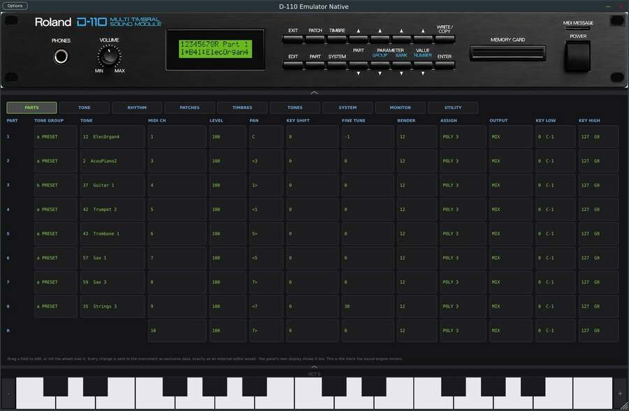
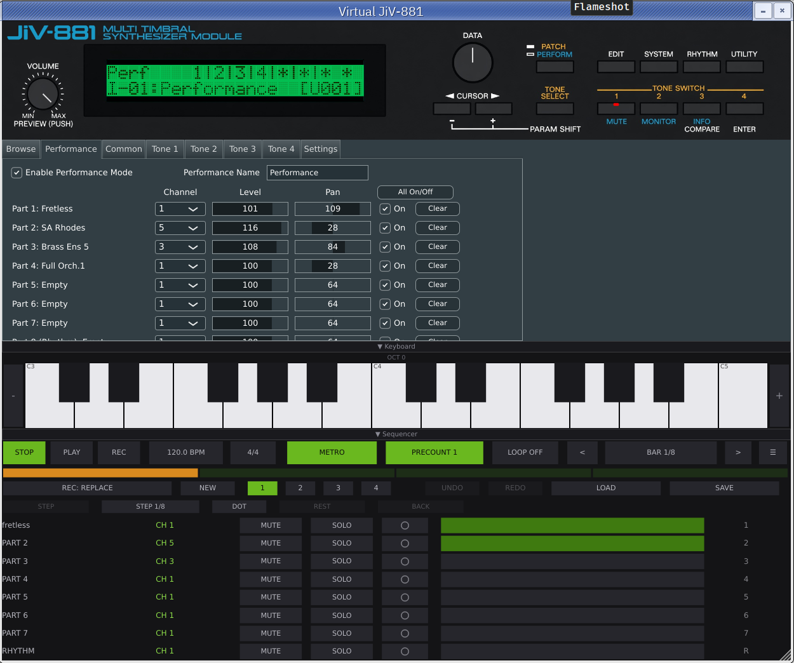
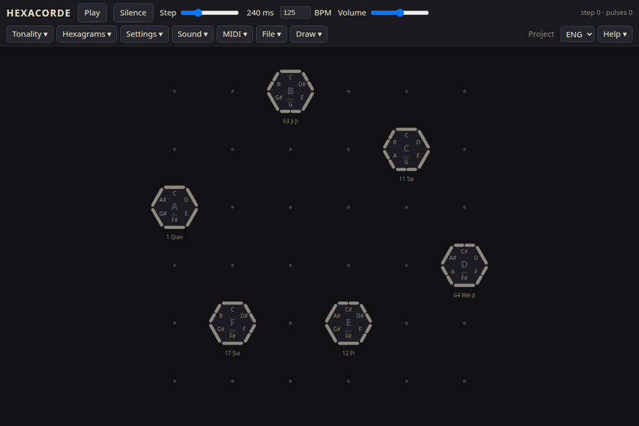
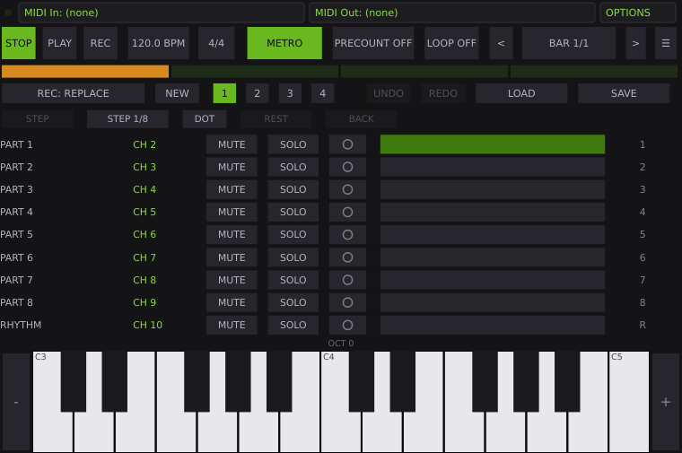
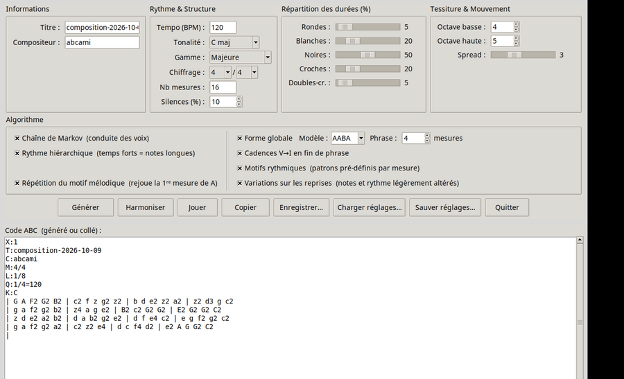
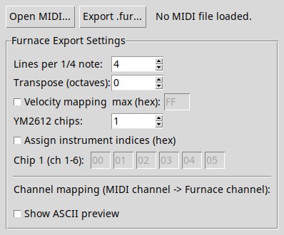

Di-111 synth
Plugin VST3 qui émule le module sonore multitimbre Roland D-110. Fait tourner le vrai firmware Roland - menus, écran, éditeurs de patch/timbre, les seize boutons de façade - contre un moteur LA32 émulé (munt). Nécessite ses propres dumps de ROM Roland (non fournis, protégés par le droit d'auteur).

JiV-881 synth
Émulateur non officiel du rompler Roland JV-880 (rack 1U de 1992), basé sur Nuked-SC55 et jv880_juce. Disponible en plugin VST3, AU, LV2 et CLAP, en application autonome (macOS, Windows, Linux/AppImage) et en version Android. Nécessite vos propres dumps de ROM Roland (non fournis).

Hexacorde
Séquenceur oraculaire : six hexagrammes du Yi Jing sont posés sur une grille (6x6 par défaut, de 3x3 à 12x12). Chaque trait d'un hexagramme est une note, envoyée vers un autre hexagramme qui la répète à son tour. Le morceau naît de la disposition des hexagrammes. Une seule page HTML en JavaScript, sans dépendance ni serveur, avec quatre thèmes. Existe aussi en module VCV Rack 2.

Essayer en ligne - github.com/luginf/hexacorde - module VCV Rack
Nonet Sequencer
Séquenceur MIDI minimaliste à 9 pistes (extensible à 16), autonome : il n'a pas de moteur sonore et pilote un synthé externe ou un DAW par ses ports MIDI. Trois vues du même tiroir : une grille classique à la souris, une vue « rétro » (petit écran LCD texte et boutons, façon séquenceur du Roland D-20, entièrement au clavier) et un piano roll. Les pistes suivent par défaut le plan de canaux du D-110.

abcAmi
Générateur de musique aléatoire au format notation ABC, en Tcl/Tk. On règle tonalité, gamme, chiffrage, nombre de mesures, silences et répartition des durées ; l'algorithme combine chaîne de Markov, rythme hiérarchique, formes globales (AABA), cadences V-I et variations sur les reprises. Lecture directe via abcmidi et timidity ou fluidsynth.

MIDI vers Furnace
Exporteur MIDI vers Furnace Tracker
(fichiers .fur), en Tcl/Tk pur et sans dépendance. Réglage de la résolution
rythmique, de la transposition, de la vélocité dans la colonne de volume, du
nombre de puces YM2612 et de la correspondance entre canaux MIDI et canaux Furnace.

Banques MIDI pour Casio CDP-S350 / CDP-S360
Liste complète des 700 voix (18 catégories) du Casio CDP-S350/CDP-S360,
convertie du format propriétaire MusE (.idf) vers MIDNAM, le format XML
quasi universel d'échange de définitions d'instruments MIDI. Utilisable tel
quel dans Ardour, Mixbus, Logic Pro et Pro Tools.
Télécharger : .midnam (Ardour, Mixbus, Logic Pro, Pro Tools) - .middev (Logic Pro, Pro Tools) - .idf (MusE, source) - script de conversion